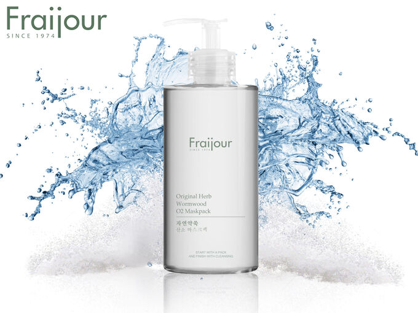
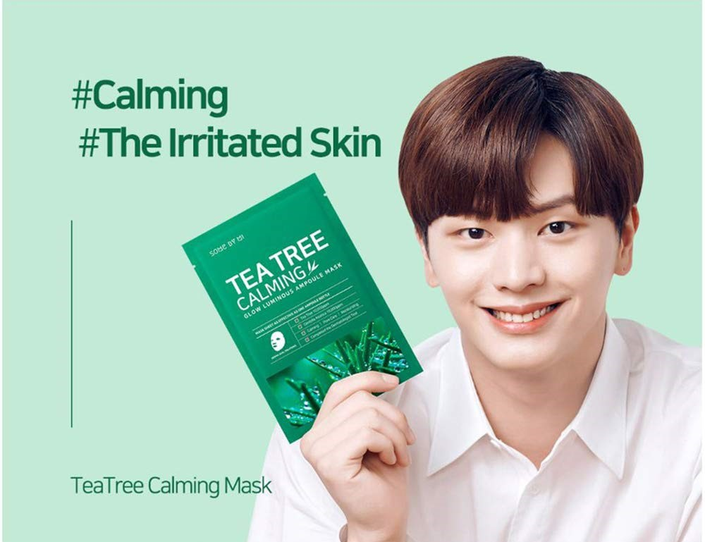
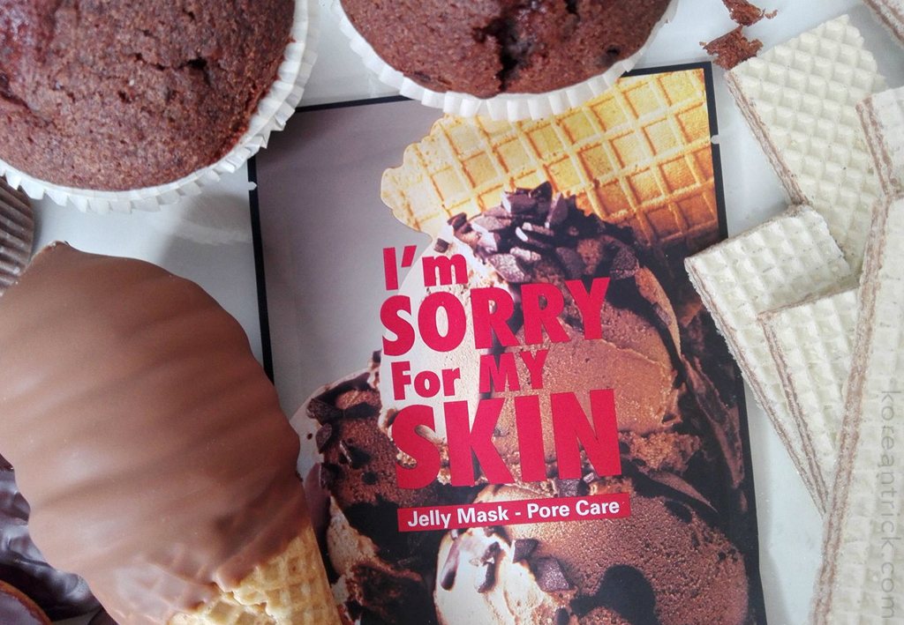
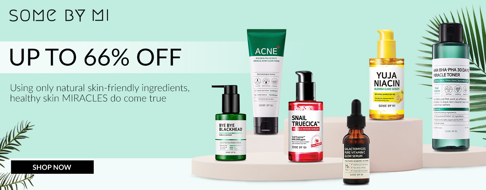
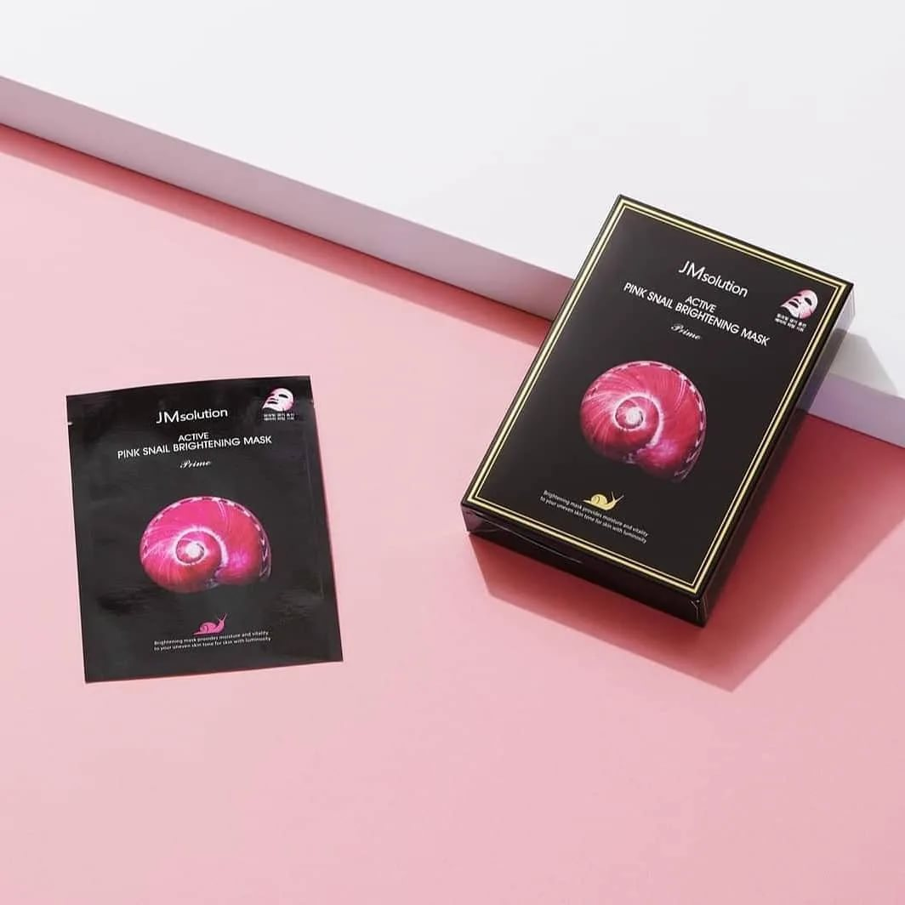
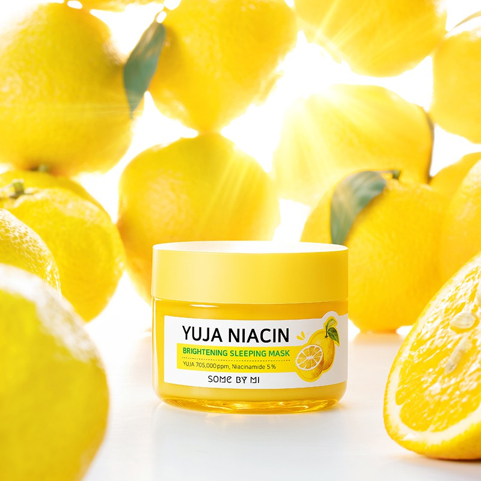

|
XOXO
Cosmetics
|
|---|
| Номер | Товар | Свойства продукта | Цена |
|---|---|---|---|
| 1 | 
|
Fraijour Original Herb Wormwood O2 Maskpack – кислородная маска,
в действие которой влюбляешься с первого применения. Формула бьюти-продукта – это
сочетание 33-х растительных компонентов, включая экстракт полыни, камелии,
женьшеня, ромашки, мяты перечной и других растений.
Средство обеспечивает полноценный уход за жирной и проблемной кожей, обеспечивает глубокое и тщательное очищение, оздоровление, антиоксидантную защиту – самый бережный и полноценный уход. Способ применения: Нанесите необходимое количество средства на очищенную кожу лица, избегая области вокруг глаз. Оставьте на 30 секунд, до образования пузырьков. Помассируйте кожу и тщательно смойте средство теплой водой. |
590грн. |
| 2 | 
|
Позаботьтесь о красоте своего лица с тканевой маской от корейского
бренда Some By Mi. Косметический продукт обогащен экстрактами чайного
дерева и центеллы азиатской, обеспечивающими интенсивный успокаивающий уход
за кожным покровом.
Основа продукта – мягкий, приятный телу и гипоаллергенный хлопок, который гарантирует максимальное насыщение клеток полезными веществами благодаря плотному прилеганию к кожному покрову. Способ применения: нанесите тонер, чтобы подготовить кожу. Выньте маску из упаковки и нанесите ее на лицо, чтобы она плотно прилегала к лицу. Снимите ее через 10-20 минут. Слегка похлопайте по лицу, чтобы эссенция хорошо впиталась. |
55грн. |
| 3 | 
|
Тканевая маска для лица разработана южнокорейскими профессионалами
на основе уникальных компонентов природного происхождения, которые обладают
выраженными увлажняющими и питательными свойствами. Уходовый продукт
Ultru I’m Sorry For My Skin Pore Care Mask обеспечивает кожному покрову продолжительную и глубокую гидратацию, помогает сохранить достаточное количество влаги на протяжении всего дня. Средство минимизирует следы усталости и недосыпания, освежает, способствует выведению токсинов, улучшает цвет лица и разглаживает его микрорельеф. Способ применения: после очищения кожи лица наложить маску (кроме области глаз и губ) на 10-20 минут, после снятия остатки увлажняющего пропитывающего состава растереть по кожному покрову. |
74грн. |

| 4 | 
|
Основа маски от бренда JMsolution изготовлена из купры – материала,
который перекрывает поток воздуха и создает так званный «парниковый» эффект.
Благодаря этому эпидермис получает интенсивный «заряд» полезными компонентами. Действие этих ингредиентов направлено на восстановление, увлажнение и борьбу с несовершенствами кожного покрова. Теперь на уход не нужно тратить много времени: всего несколько минут – и ваша кожа сияет! Способ применения: достаньте маску из упаковки, расправьте ее и плотно приложите к очищенной сухой коже лица. Оставьте на 15-20 минут. Уберите маску. Остатки эссенции мягко вбейте в кожу лица подушечками пальцев. |
40грн. |
| 5 | 
|
Если вы любите просыпаться красивой и отдохнувшей, то используйте
ночные маски. Они помогут насытить кожу витаминами и сделать ее сияющей даже,
если вы легли за полночь.
Для осветления и улучшения цвета выберите ночную, выравнивающую тон маску для лица от корейского бренда Some By Mi. Она прекрасно освежает эпидермис, делает его упругим и подтянутым. На утро вы даже можете заметить эффект модной «стеклянной кожи», что даже не захочется пользоваться тональным кремом. Способ применения: Нанести на кожу лица равномерно и оставить на ночь, утром смыть проточной водой. | 430грн. |
|
Вы можете связаться с нами: e-mail:diana2000life$.gmail Instagram:XOXO COSMETICS
|
|---|